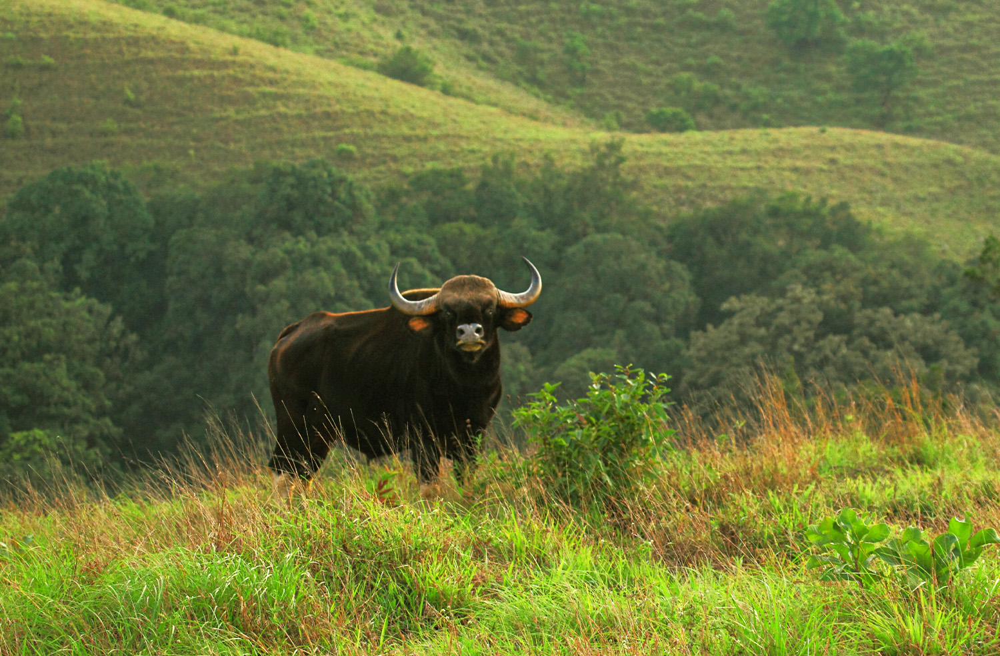

Popular Places of Chikmagaluru
Mullayangiri

Mullayyanagiri is the highest peak in Karnataka, India. Mullayyanagiri is located in the
Chandra Dhrona Hill Ranges of the Western Ghats of
Chikkamagaluru Taluk. With a height of 1,925 metres (6,316 ft), it is the highest peak
in Karnataka and also the highest peak in the Krishna River basin
Hebbe falls

Hebbe Falls is situated about 10 km away from the famous hill station Kemmangundi in
Karnataka, India. This waterfalls is inside
a coffee estate and can be reached either by walk or four-wheeler. Hebbe Falls gushes
down from a height of 551 ft in two stages to
form Dodda Hebbe and Chikka Hebbe.
kallathigiri falls

The Kallathigiri Falls, also known as the Kalhatti Falls, is a magnificent natural abode
located 50 kilometres away from Chikmakagalur.
This waterfall is a perfect destination for leisure mongers and thrill seekers alike,
and is popular among both locals as well as tourists.
The fall gushes down the majestic Chandra Dona Mountains from a height of about 400
feet.
Z-point,Kemmangundi

Kemmannugundi (Red Soil Pit) is a hill station in Tarikere taluk of Chikkamagaluru
district in the state of Karnataka, India.
It is at the elevation of 1434m above sea level, with its peak at 1863m. This was the
summer retreat of Krishnaraja Wodeyar IV and
as a mark of respect to the king, it is also known as Sri Krishnarajendra Hill Station.
Sringeri
Sringeri also called Sri Kshetra Shringeri is a hill town and Taluk headquarters located
in Chikkamagaluru district
in the Indian state of Karnataka. It is the site of the first maṭha (Dakshinamnaya
Sringeri Sharada Peetham) established by Adi Shankara,
Hindu theologian and exponent of the Advaita Vedanta philosophy, in the 8th century CE.
Kudremukh

Kudremukha is a mountain range and name of a peak located in Chikkamagaluru district, in
Karnataka, India.
It is also the name of a small hill station cum mining town situated near the mountain,
about 20 kilometres from Kalasa.
The name Kuduremukha literally means 'horse-faced (Kannada) and refers to a particular
picturesque view of a side of the mountain that resembles a horse's face.


{kind=link}
{kind=link}
{kind=link}
{kind=link}
{kind=link}
{kind=link}